Instrukcja panelu dla szkoły — co się dzieje, gdy ktoś zapisuje się przez stronę, i co możesz z tym zrobić.
Wersja z 13 października 2026 · przygotował Mateusz
Spis treści
1. Najważniejsze w pigułce
2. Jak wejść do panelu
3. Jak kursant zapisuje się na kurs
4. Pulpit „Do zrobienia”
5. Nowe zgłoszenie — co z nim zrobić
6. Statusy zapisu i maile do kursanta
7. Wolne miejsca i lista rezerwowa
8. Zapis przez telefon
9. Termin: lista uczestników i Excel
10. Wysyłki — wiadomość do grupy osób
11. Newsletter
12. Maile, które nie doszły
13. Konta uczestników
14. Wiadomości z formularza kontaktowego
15. Dane osobowe — prośby z RODO i co znika samo
16. Ważne rzeczy o mailach
17. Czego jeszcze nie ma
Prośba na koniec
1. Najważniejsze w pigułce
Ludzie zapisują się na kursy sami, przez stronę. Ty dostajesz maila o każdym zapisie, a zgłoszenie czeka w panelu.
Zgłoszenie nie jest wiążące. To Ty decydujesz: potwierdzasz miejsce, przyjmujesz zaliczkę, wpisujesz opłatę — zmieniając status zapisu.
Część statusów sama wysyła kursantowi maila („potwierdzony”, „rezygnacja”, a „opłacony” tylko przed pierwszym dniem kursu — rozdział 6) — nie piszesz go ręcznie, wychodzi w chwili zmiany statusu. Zmieniasz status z listy „Zapisy” — panel najpierw zapyta, czy na pewno. W otwartym zapisie nie pyta: mail wyjdzie po „Zapisz”. Zapis bez adresu e-mail (np. telefoniczny) nie dostaje maila nigdy — wtedy panel też nie pyta.
Wolne miejsca liczą się same. Gdy termin się zapełni, kolejne osoby trafiają na listę rezerwową, a gdy miejsce się zwolni — dostajesz maila z tą listą.
Możesz napisać do wszystkich zapisanych na termin, do wszystkich z nadchodzącymi kursami albo do newslettera — w zakładce Wysyłki.
Jeśli jakiś mail do kursanta nie dojdzie, panel Ci o tym powie — na pulpicie pojawi się kafelek „Maile, które nie doszły”.
Prośby z RODO („co o mnie macie?”, „usuńcie moje dane”) załatwiasz sam, w kilka kliknięć (rozdział 15).
Codziennie wystarczy jedno:
zajrzyj na pulpit panelu. Wszystko, co wymaga Twojej uwagi, jest na samej górze.
2. Jak wejść do panelu
Panel to część strony tylko dla Ciebie. Wchodzisz na adres strony z dopiskiem /admin:
teraz, na stronie testowej: szkolawspinaczkowa.pl/admin
po przełączeniu na docelowy adres: abcwspinania.info/admin
Logujesz się swoim adresem e-mail i hasłem. Jeśli zapomnisz hasła, kliknij na ekranie logowania Nie pamiętasz hasła? — przyjdzie mail z linkiem do ustawienia nowego.
Swoje hasło zmienisz sam: wejdź na szkolawspinaczkowa.pl/admin/account (albo kliknij ikonę swojego konta w panelu), kliknij Zmień hasło, wpisz nowe dwa razy i Zapisz. Po każdej zmianie hasła albo adresu e-mail konta przychodzi na Twoją skrzynkę mail „Zmieniono … do panelu”. Jeśli to nie była Twoja zmiana: przy zmienionym haśle od razu ustaw nowe przez Nie pamiętasz hasła? i daj mi znać; przy zmienionym adresie od razu dzwoń do mnie — link do nowego hasła poszedłby wtedy na cudzy adres. Panel nie pyta przy zmianie o stare hasło, dlatego na cudzym komputerze zawsze się wylogowuj.
Po lewej stronie (ikona z trzema kreskami) jest menu z zakładkami pogrupowanymi w cztery części:
Grupa
Zakładki
Do czego
Treść
Kursy, Obozy i wyjazdy, Terminy, Aktualności, Opinie, Instruktorzy, Media, Galeria
to, co widać na stronie — tak jak dotychczas
Zapisy
Zapisy, Wysyłki, Uczestnicy
zgłoszenia na kursy, wiadomości do grup, konta kursantów
Kontakt
Wiadomości, Newsletter
wiadomości z formularza i adresy z newslettera
System
Konta panelu
osoby, które mogą logować się do panelu (Ty i ja)
Jedna przeglądarka = jedno logowanie.
Panel i strona dzielą logowanie. Jeśli w tej samej przeglądarce zalogujesz się na stronie jako kursant (np. żeby coś sprawdzić), wylogujesz się z panelu — i odwrotnie. Do takich sprawdzeń użyj drugiej przeglądarki albo okna prywatnego.
3. Jak kursant zapisuje się na kurs
Na stronie każdego kursu, w ramce z ceną, są najbliższe terminy z liczbą wolnych miejsc i przycisk Zapisz się na kurs.
Strona kursu — z prawej terminy i przycisk zapisu.
Przycisk Zapisz się w nagłówku strony (na telefonie — pasek na dole ekranu) prowadzi do Terminarza: tam są wszystkie terminy, a przy każdym przycisk zapisu. Na stronie kursu prowadzi prosto do zapisu na ten kurs, a na stronie obozu — do formularza kontaktowego z wybranym tematem „Obóz lub wyjazd” (zapisy na obozy przez osobny formularz dojdą później, rozdział 17).
Po kliknięciu kursant widzi formularz: wybiera termin i wpisuje imię, nazwisko, adres e-mail i telefon. Może dopisać uwagi (np. „mam własny sprzęt”). Musi zaznaczyć zgodę na przetwarzanie danych.
Jeśli ma konto i jest zalogowany — nie wpisuje danych, wybiera tylko termin.
Jeśli nie ma konta — może zaznaczyć „Załóż mi konto z tych danych”. Dostanie wtedy maila z linkiem do ustawienia hasła.
Na terminie bez wolnych miejsc formularz od razu mówi „brak miejsc — lista rezerwowa”.
Zapisy bez konta nie przepadają.
Jeśli ktoś zapisze się raz czy kilka razy bez konta, a kiedyś założy konto na ten sam adres e-mail, wszystkie te zapisy same przypną się do jego konta — zobaczy je w „Moich zapisach”, także te z minionych kursów. Dzieje się to dopiero, gdy potwierdzi adres (kliknie link z maila), więc nikt nie zobaczy cudzych zapisów, wpisując cudzy adres. Wielkie i małe litery w adresie nie mają znaczenia, ale literówka tak — zapis z błędnym adresem się nie przypnie.
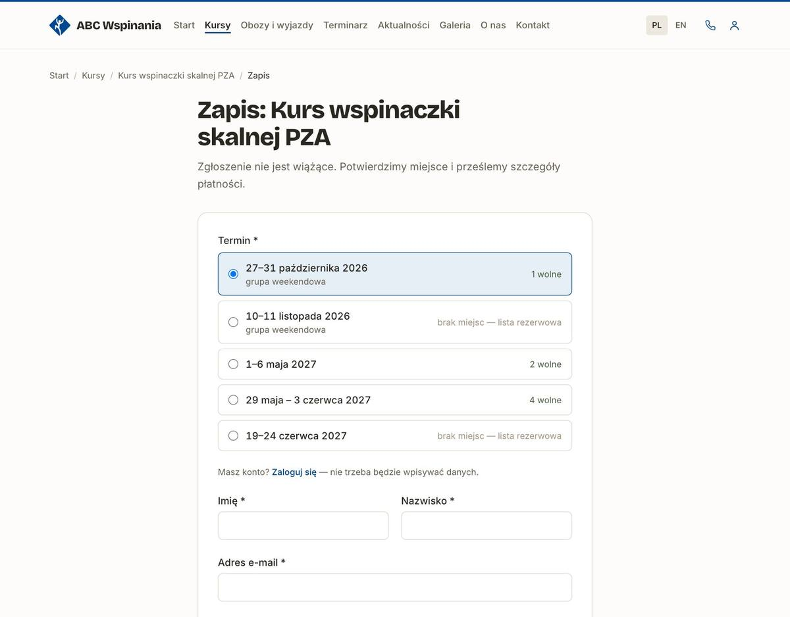
Formularz zapisu (widok bez logowania).
Co dzieje się po kliknięciu „Zapisz się”
Zapis pojawia się w panelu w zakładce Zapisy ze statusem „zgłoszony” (albo „lista rezerwowa”, gdy brak miejsc).
Kursant dostaje maila „Przyjęliśmy zgłoszenie” (albo „Lista rezerwowa”) z nazwą kursu i terminem.
Ty dostajesz maila „Nowy zapis” z danymi osoby i jej uwagami. Odpowiedź na tego maila trafi wprost do kursanta.
Kursant z kontem widzi swoje zapisy i ich stan na stronie, w zakładce Moje konto. Tam też poprawia swoje imię, nazwisko i telefon (nowe dane trafiają od razu do jego nadchodzących zapisów — zobaczysz je w „Zapisach”; zakończone zostają bez zmian), wybiera, w jakim języku dostaje maile, i może sam usunąć konto. Adresu e-mail kursant sam nie zmieni — o to prosi Ciebie.
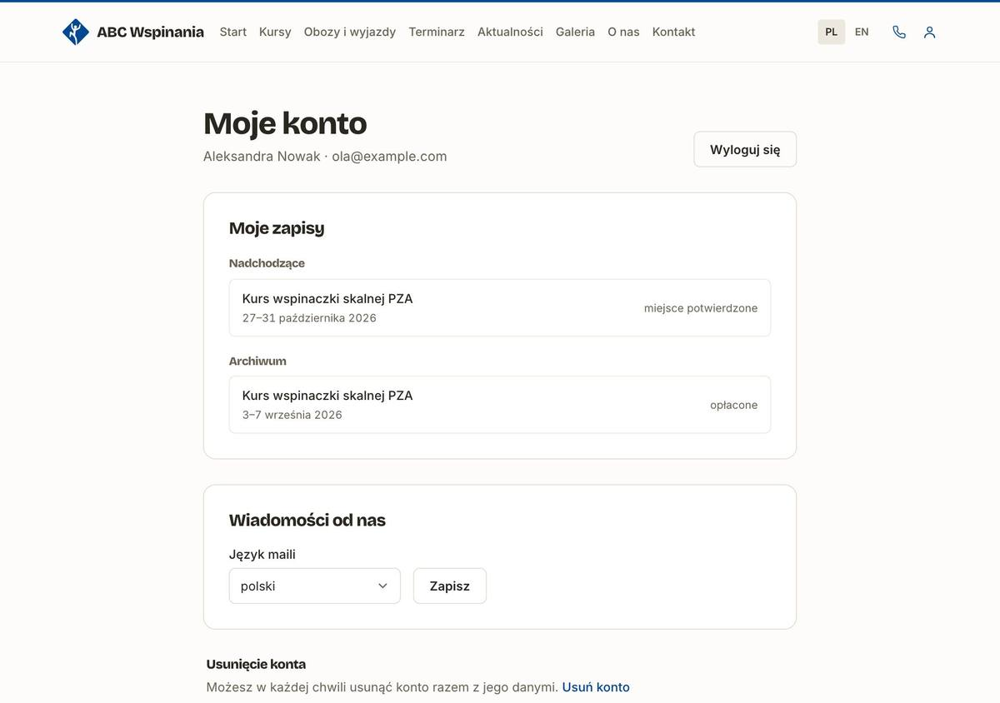
Moje konto — tak kursant widzi swoje zapisy i ich stan.
4. Pulpit „Do zrobienia”
Pierwszy ekran po zalogowaniu. Na górze pięć kafelków — każda liczba to link do listy właśnie tych spraw:
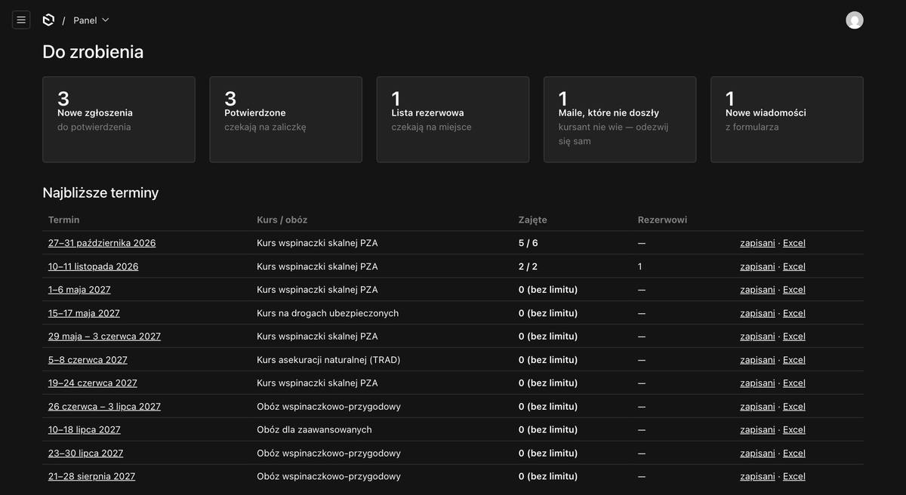
Pulpit panelu.
Kafelek
Co znaczy
Nowe zgłoszenia
zapisy, których jeszcze nie potwierdziłeś
Potwierdzone
osoby z potwierdzonym miejscem, które nie wpłaciły jeszcze zaliczki
Lista rezerwowa
osoby czekające na zwolnienie miejsca
Maile, które nie doszły
kursanci, do których mail nie dotarł — trzeba się odezwać samemu (rozdział 12)
Nowe wiadomości
wiadomości z formularza kontaktowego, których jeszcze nie ruszyłeś
Pod kafelkami jest tabela Najbliższe terminy — 12 najbliższych kursów i obozów: ile miejsc zajętych na ile („5 / 6”), ile osób na liście rezerwowej i dwa linki — zapisani (lista osób tylko z tego terminu) i Excel (lista do pobrania). Link zapisani to najszybsza droga do uczestników jednego kursu.
„0 (bez limitu)” oznacza termin, w którym nie wpisano liczby miejsc — patrz rozdział 7. Terminy, które już minęły, same zmieniają status na „zakończony” (w ciągu dwóch dni po kursie) i znikają z tabeli.
5. Nowe zgłoszenie — co z nim zrobić
Kliknij kafelek Nowe zgłoszenia albo wejdź w Zapisy.
Sprawdź osobę i jej uwagi. Jeśli trzeba — zadzwoń (telefon jest na liście).
Zmień status na „potwierdzony”. Kursant dostanie maila, że ma miejsce.
Szczegóły płatności wyślij kursantowi sam (mailem albo SMS-em) — mail o potwierdzeniu mówi tylko, że szczegóły płatności przyjdą osobno.
Gdy wpłynie zaliczka — status „zaliczka wpłacona”. Gdy całość — „opłacony”. Przed kursem kursant dostanie maila „Płatność zaksięgowana”; od pierwszego dnia kursu mail już nie wychodzi (rozdział 6).
Najszybciej: status prosto z listy
Na liście Zapisy status każdej osoby to rozwijana lista. Wybierasz nowy i gotowe — nie trzeba wchodzić w zapis ani nic zapisywać.
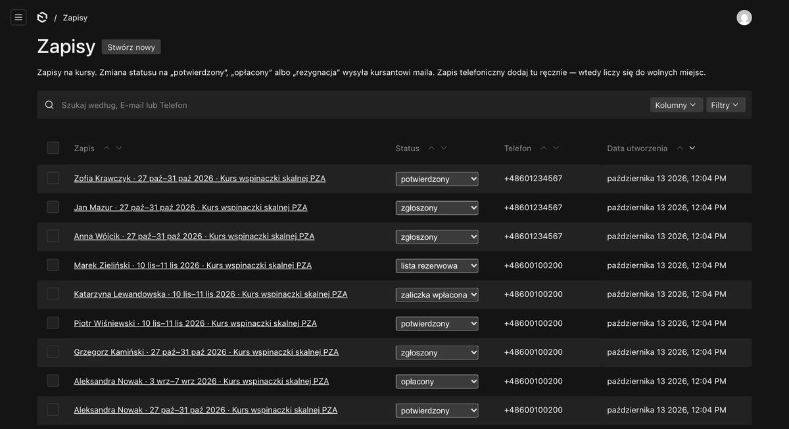
Lista zapisów — status zmienisz bezpośrednio w kolumnie „Status”.
Panel pyta, zanim wyśle maila.
Przy zmianie na status, który wysyła kursantowi maila, pojawia się okienko „Zmienić status na „potwierdzony”? Kursant dostanie maila.” — to zabezpieczenie przed kliknięciem w zły wiersz. Przy „opłacony” pytanie brzmi „…Jeśli kurs jeszcze się nie zaczął, kursant dostanie maila.” — lista nie wie, czy kurs już trwa; panel sprawdzi to sam po kliknięciu OK. Kliknij OK, żeby zmienić, albo Anuluj, żeby nic się nie stało. Jeśli wybierzesz status, który zapis już ma, okienka nie będzie — nic się nie zmienia, więc i mail nie wychodzi.
Albo w samym zapisie
Kliknięcie w nazwisko otwiera cały zapis: dane kontaktowe, uwagi kursanta i pole Notatki szkoły — tam możesz zapisać cokolwiek dla siebie (kursant tego nie widzi). Po zmianach kliknij Zapisz w prawym górnym rogu.
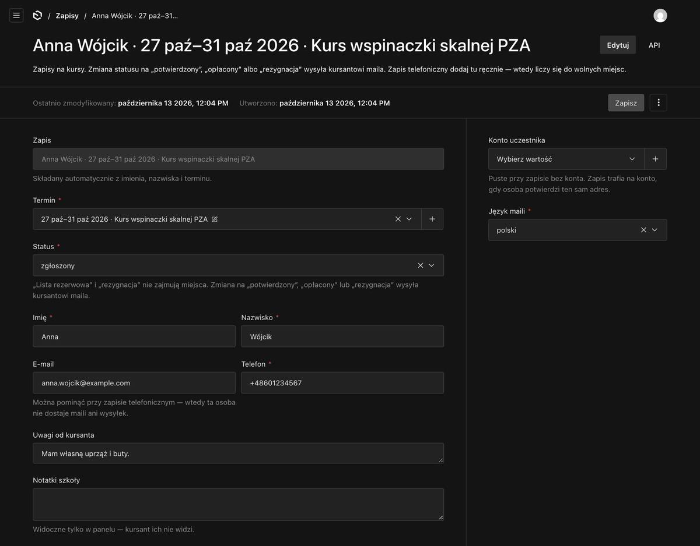
Zapis otwarty w panelu.
Uwaga:
w otwartym zapisie panel nie pyta o potwierdzenie — jeśli zmienisz tam status na „potwierdzony”, „opłacony” (przed kursem) albo „rezygnacja”, mail wyjdzie po kliknięciu Zapisz.
6. Statusy zapisu i maile do kursanta
Status
Kiedy go ustawić
Zajmuje miejsce?
Mail do kursanta
zgłoszony
ustawia się sam po zapisie przez stronę
tak
— (dostał już „Przyjęliśmy zgłoszenie”)
potwierdzony
gdy potwierdzasz miejsce
tak
tak — „Miejsce potwierdzone”
zaliczka wpłacona
po wpłacie zaliczki
tak
nie
opłacony
po wpłacie całości
tak
tylko przed kursem — „Płatność zaksięgowana”; od pierwszego dnia kursu bez maila
lista rezerwowa
ustawia się sam, gdy brak miejsc
nie
— (dostał już „Lista rezerwowa”)
rezygnacja
gdy ktoś rezygnuje albo odwołujesz zapis
nie — zwalnia miejsce
tak — „Zapis anulowany”
Maile idą w języku kursanta — po polsku albo po angielsku (rozdział 16). Na każdego z nich kursant może po prostu odpowiedzieć, a odpowiedź trafi do Ciebie.
„Opłacony” w dniu kursu albo po nim — bez maila.
Większość osób płaci na miejscu, pierwszego dnia kursu, a status zmieniasz w trakcie albo po kursie. Mail „Płatność zaksięgowana” przyszedłby wtedy, gdy kurs już trwa albo się skończył — a ta osoba dała Ci pieniądze do ręki, więc taki mail tylko by ją zdziwił. Dlatego:
przed pierwszym dniem kursu (np. ktoś zapłacił przelewem) — „opłacony” wysyła maila: kursant ma potwierdzenie, że pieniądze doszły;
od pierwszego dnia kursu — status się zmienia, ale mail nie wychodzi. Nic nie musisz zaznaczać ani pamiętać — panel sprawdza datę sam.
Kursant z kontem i tak widzi status swojego zapisu w „Moim koncie” — także „opłacone”. Liczy się dzień w Polsce: od północy pierwszego dnia kursu mail już nie wyjdzie.
Rezygnacja zamiast usuwania.
Gdy ktoś się wycofa, ustaw „rezygnacja” zamiast kasować zapis — zostaje ślad w historii, a miejsce i tak się zwalnia.
7. Wolne miejsca i lista rezerwowa
W każdym terminie (zakładka Terminy) jest pole Liczba miejsc.
Gdy je wpiszesz (np. 6) — panel sam liczy wolne miejsca: liczba miejsc minus zapisy, które zajmują miejsce (tabela w rozdziale 6). Gdy wolnych zabraknie, termin sam przełącza się na „brak miejsc — lista rezerwowa”, a nowe osoby trafiają na listę rezerwową. Gdy miejsce się zwolni — wraca na „zapisy otwarte”.
Gdy je zostawisz puste — nic się nie liczy, a na stronie widać „zapytaj o miejsca”. Status terminu ustawiasz wtedy ręcznie.
Gdy zwolni się miejsce
Jeśli na terminie jest lista rezerwowa, a miejsce się zwolni (rezygnacja, usunięty zapis albo większa liczba miejsc), dostaniesz maila „Zwolniło się miejsce” z całą listą rezerwową — w kolejności zapisu, z telefonem i adresem każdej osoby.
Zdecyduj, kogo przyjmujesz (zwykle pierwszą osobę z listy) — możesz najpierw zadzwonić.
Zmień jej status z „lista rezerwowa” na „potwierdzony”. Dostanie maila, że ma miejsce.
Nikt nie jest przesuwany z listy rezerwowej automatycznie — zawsze decydujesz Ty.
8. Zapis przez telefon
Jeśli ktoś zapisał się u Ciebie przez telefon, dopisz go w panelu — wtedy liczy się do wolnych miejsc i nikt nie „zajmie” jego miejsca przez stronę.
Wejdź w Zapisy i kliknij Stwórz nowy (przycisk obok tytułu listy).
Wybierz Termin, ustaw Status (np. „potwierdzony”) i wpisz imię, nazwisko i telefon.
E-mail możesz zostawić pusty — wiele osób dzwoni i nie podaje adresu.
Pole Konto uczestnika zostaw tak, jak jest — szary napis „Wybierz wartość” znaczy, że pole jest puste, i tak ma być.
Kliknij Zapisz.
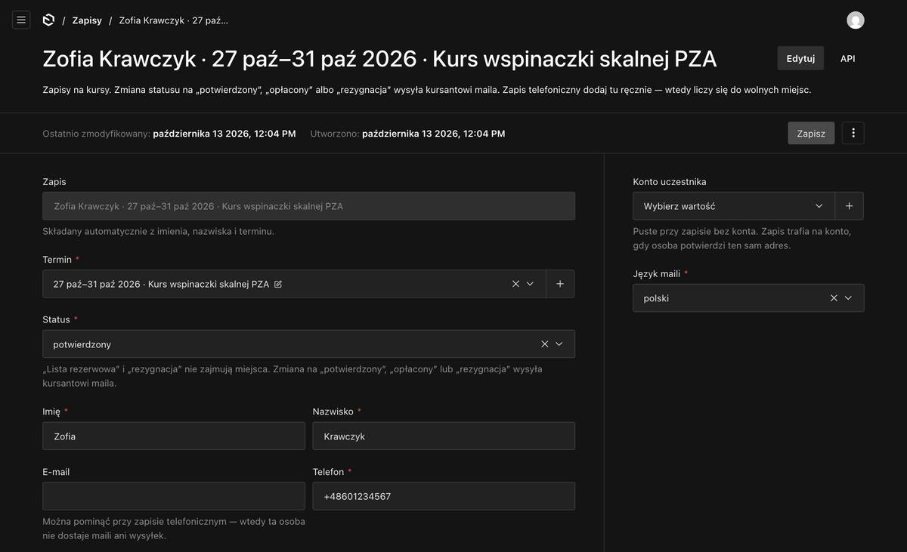
Zapis telefoniczny bez adresu e-mail.
Przy dodawaniu ręcznym nie wychodzą żadne maile — ani do kursanta, ani do Ciebie. Umówiliście się osobiście, więc oboje już wiecie.
Bez adresu e-mail ta osoba nie dostaje nic, nigdy: ani maili o zmianie statusu, ani wysyłek. Panel nie pyta wtedy przy zmianie statusu, bo nie ma do kogo pisać.
Jeśli adres wpiszesz, późniejsze zmiany statusu (np. na „potwierdzony”) wysyłają maila jak przy każdym zapisie — „opłacony” tylko przed kursem (rozdział 6).
9. Termin: lista uczestników i Excel
Otwórz termin w zakładce Terminy (albo kliknij datę na pulpicie). Widzisz tam liczbę miejsc i wolne miejsca, a niżej tabelę Zapisani — wszyscy zapisani na ten termin, także rezerwowi i rezygnacje — ze zmianą statusu prosto z tabeli.
Z prawej przycisk Pobierz listę uczestników (Excel) — plik z kolumnami: Lp., imię, nazwisko, telefon, e-mail, status, uwagi od kursanta i data zapisu. Otwiera się w Excelu z polskimi znakami, a telefon zostaje z plusem. Przydaje się do ubezpieczenia albo jako wydruk na skały.
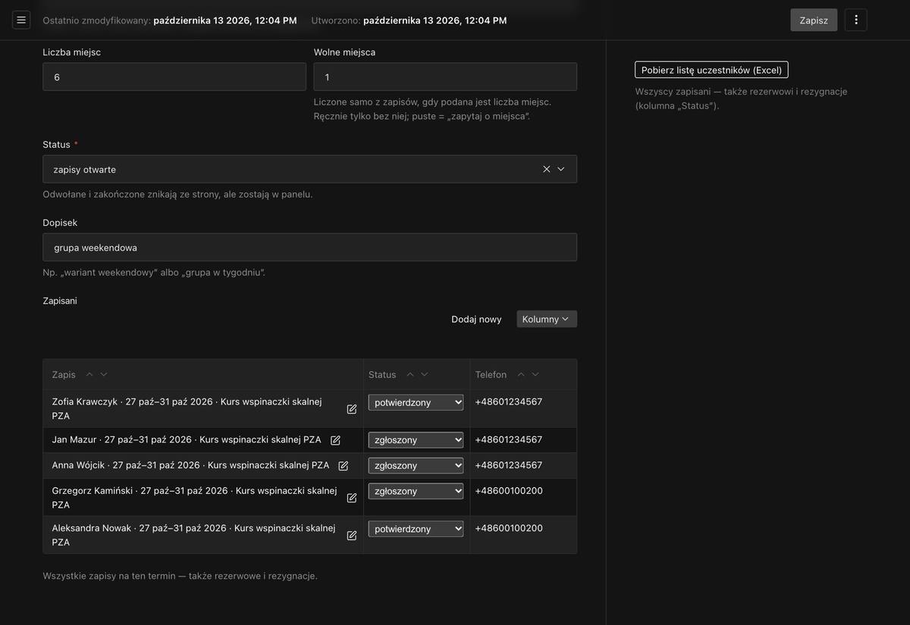
Termin w panelu: liczba miejsc, wolne miejsca, lista zapisanych i przycisk Excela.
Po kursie i przy odwołaniu
Po kursie nic nie musisz robić — termin sam zmieni status na „zakończony” (w ciągu dwóch dni) i zniknie ze strony. Zapisy zostają w historii, a kursanci widzą kurs w archiwum w Moim koncie.
Odwołanie: terminu, na który są zapisy, nie da się usunąć — panel to zablokuje i podpowie, co zrobić. Ustaw jego status na „odwołany”: zniknie ze strony, a zapisy zostaną.
Odwołanie terminu nie powiadamia zapisanych.
Napisz do nich przez Wysyłki (rozdział 10) — wybierz ten termin i zaznacz „Także lista rezerwowa”.
10. Wysyłki — wiadomość do grupy osób
Zakładka Wysyłki służy do napisania jednej wiadomości do wielu osób naraz. Przykłady: godzina zbiórki dla grupy, zmiana miejsca, prognoza pogody, informacja o nowych terminach dla newslettera.
Krok po kroku
Wejdź w Wysyłki i kliknij Stwórz nowy.
Wpisz Temat i Treść. Nad treścią są przyciski: pogrubienie (B), kursywa (I), podkreślenie (U) i link. Pod literą „T” są nagłówki i listy.
W polu Do kogo wybierz: zapisani na jeden termin — potem wybierz termin; wszyscy z nadchodzącymi zapisami — każdy, kto ma zapis na kurs, który jeszcze się nie odbył; albo newsletter (potwierdzone adresy).
Domyślnie wiadomość dostają tylko osoby z miejscem. Zaznacz „Także lista rezerwowa”, jeśli ma ją dostać też lista rezerwowa (np. przy odwołaniu terminu).
Kliknij Zapisz. Dopiero wtedy z prawej pojawi się, do ilu osób pójdzie wiadomość, i przyciski wysyłki. Nic jeszcze nie wychodzi — to szkic, możesz go dokończyć później.
Kliknij Wyślij próbnie do mnie i sprawdź w swojej skrzynce, jak mail wygląda (w temacie będzie dopisek „[PRÓBA]”).
Kliknij Wyślij. Panel jeszcze raz zapyta, do ilu osób wysłać — potwierdź.
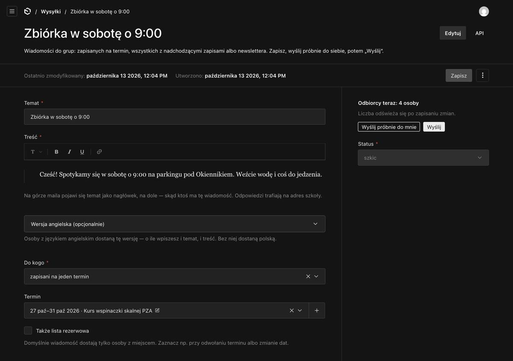
Zapisana wysyłka — z prawej liczba odbiorców i przyciski.
Najpierw „Zapisz”, potem „Wyślij” — panel tego pilnuje.
Wysyła się zawsze ostatnia ZAPISANA wersja. Jeśli coś zmienisz i nie zapiszesz (np. dopiszesz wersję angielską), przyciski wysyłki zrobią się szare, a nad nimi pojawi się czerwony napis „Masz niezapisane zmiany”. Kliknij Zapisz — przyciski wrócą, a liczba odbiorców się odświeży.
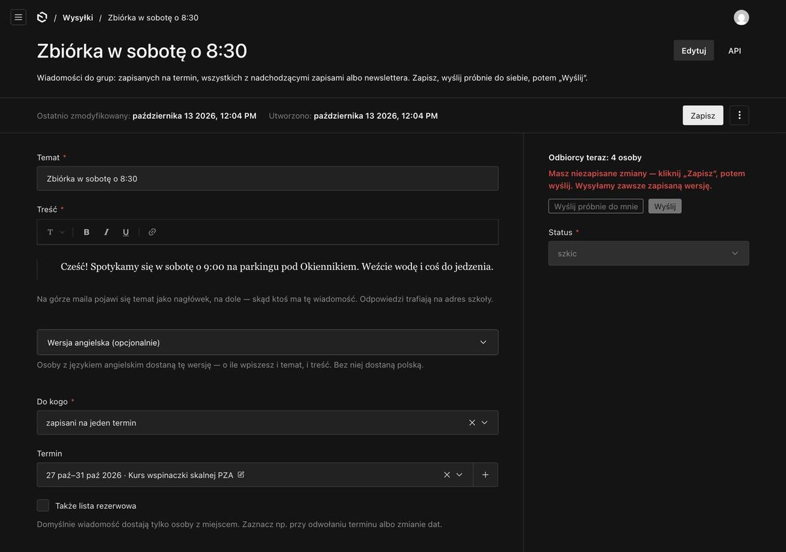
Zmieniony temat, jeszcze niezapisany — wysyłka zablokowana.
Wersja angielska
Pod treścią jest rozwijane pole Wersja angielska (opcjonalnie). Jeśli wpiszesz w nim temat i treść po angielsku, osoby z ustawionym językiem angielskim dostaną tę wersję. Jeśli jej nie wpiszesz — dostaną polską. Panel przed wysłaniem powie, ile jest takich osób.
Po wysłaniu
Maile wychodzą partiami — przy kilkunastu osobach to kilka sekund. Z prawej widać postęp: „Wysłana: 12 z 12”. Na dole tabela Odbiorcy: kto dostał, a do kogo mail nie doszedł i dlaczego.
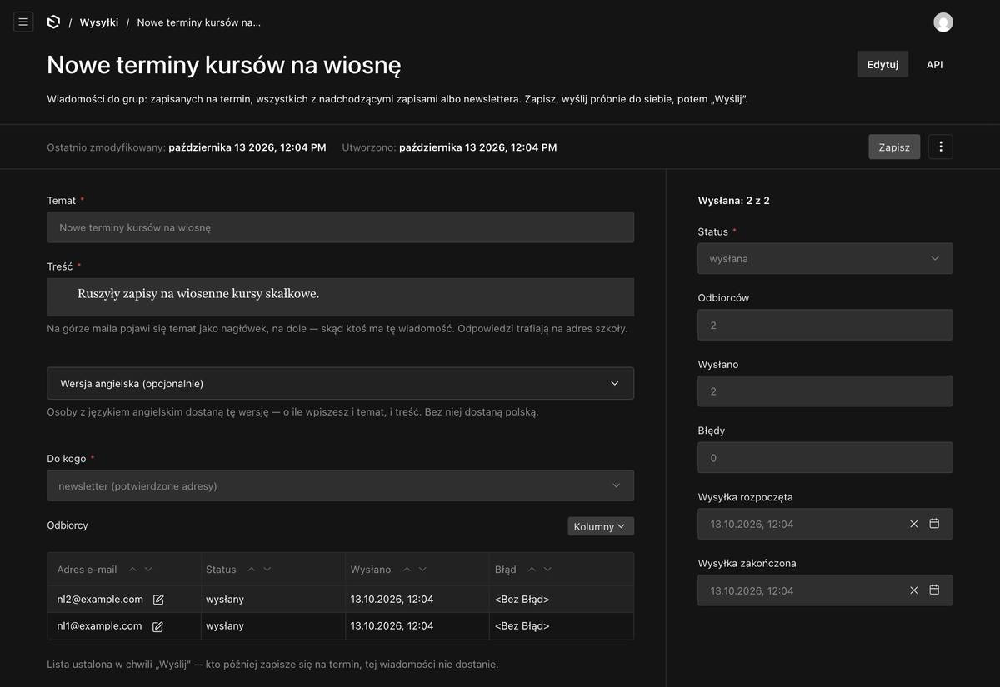
Wysyłka po wysłaniu — postęp z prawej, tabela odbiorców na dole.
Kto odpowie na wysyłkę — odpowiedź trafi do Ciebie. Lista odbiorców ustala się w momencie kliknięcia „Wyślij”: ktoś, kto zapisze się minutę później, tej wiadomości już nie dostanie.
Podobna wiadomość jeszcze raz — „Zduplikuj”
Wysłanej wiadomości nie da się już zmienić — zostaje taka, jaką ludzie dostali. Żeby wysłać podobną, otwórz menu z trzema kropkami (obok „Zapisz”) i wybierz Zduplikuj — powstanie kopia do edycji.
Kopia nie wyjdzie od razu: „Wyślij” jest zablokowane, a panel prosi, żebyś najpierw sprawdził treść i odbiorców. Zmień, co trzeba, i kliknij Zapisz — albo, jeśli wszystko się zgadza, Sprawdzone — odblokuj wysyłkę. To zabezpieczenie przed wysłaniem tej samej wiadomości drugi raz jednym kliknięciem. „Wyślij próbnie do mnie” działa od razu.
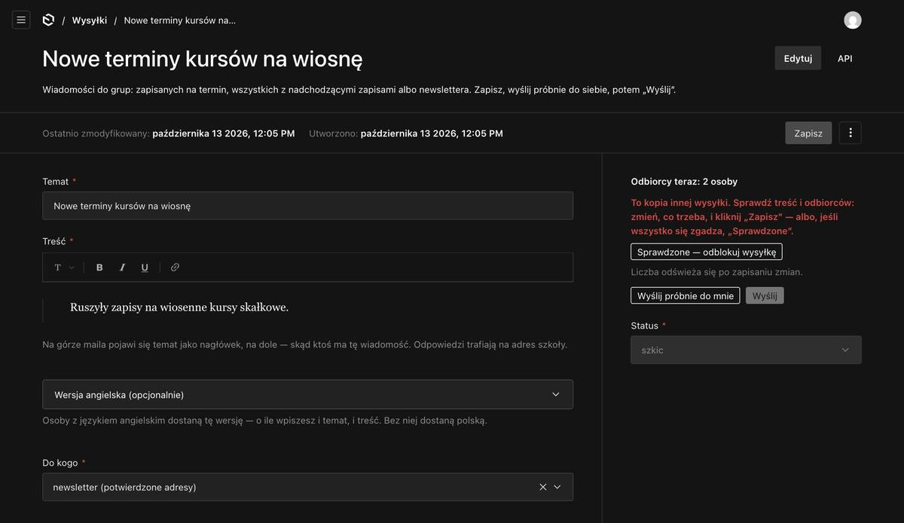
Kopia wysyłki czeka na sprawdzenie.
11. Newsletter
Na dole każdej strony jest pole zapisu na newsletter. Po wpisaniu adresu osoba dostaje maila z prośbą o potwierdzenie i dopiero po kliknięciu w link (i przycisk „Potwierdzam zapis”) jest zapisana. To chroni przed wpisaniem cudzego adresu albo zasypaniem listy fałszywymi adresami przez boty.
Adresy są w zakładce Newsletter (grupa „Kontakt”):
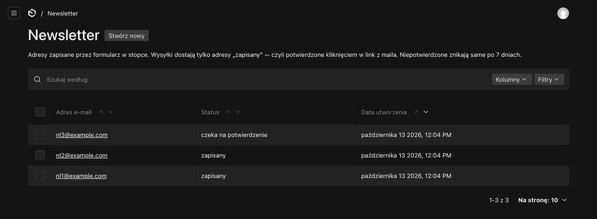
Lista adresów newslettera.
Status
Co znaczy
czeka na potwierdzenie
osoba się zapisała, ale nie kliknęła jeszcze w link. Nie dostaje wysyłek. Po 7 dniach adres znika sam.
zapisany
potwierdzony — dostaje wysyłki do newslettera
wypisany
osoba się wypisała. Adres zostaje jako dowód, że i kiedy wycofała zgodę — nie usuwaj go.
W każdym newsletterze na dole jest link „Wypisz się z newslettera”, a w Gmailu i innych skrzynkach — przycisk „Wypisz się” obok nadawcy. Wypisanie działa od razu.
Adresów do newslettera nie dodaje się ręcznie — każdy musi zapisać się sam i potwierdzić. Inaczej nie mamy dowodu zgody.
Newsletter wysyłasz przez Wysyłki (rozdział 10), wybierając „newsletter (potwierdzone adresy)”.
12. Maile, które nie doszły
Czasem mail do kursanta nie wyjdzie — najczęściej przez literówkę w adresie albo dlatego, że skończył się dzienny limit maili (rozdział 16). Zapis i tak jest w panelu, ale kursant nie wie, że np. ma potwierdzone miejsce.
Takie zapisy liczy kafelek „Maile, które nie doszły” na pulpicie. W samym zapisie, z prawej, zobaczysz, który mail i dlaczego:
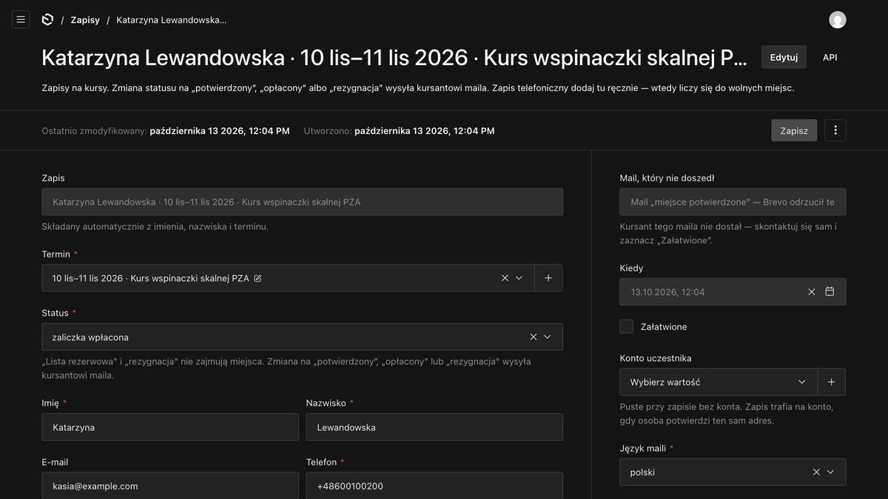
Zapis z mailem, który nie doszedł — przyczyna i pole „Załatwione” z prawej.
Co zrobić:
Zadzwoń albo napisz do tej osoby sam. Jeśli w adresie jest literówka — popraw go w zapisie.
Zaznacz „Załatwione” i kliknij Zapisz. Zapis zniknie z kafelka.
Dlaczego nie ma przycisku „wyślij ponownie”?
Bo najczęstszą przyczyną jest literówka w adresie (np. gmial.com) — drugi mail na ten sam zły adres też nie dojdzie. Telefon jest w każdym zapisie, więc najpewniej jest zadzwonić i przy okazji poprawić adres. Gdyby przyczyną był limit maili, treść i tak przekażesz szybciej sam.
Dotyczy to maili: potwierdzenie zapisu, lista rezerwowa, zmiana statusu (potwierdzony, opłacony przed kursem, rezygnacja) i link do ustawienia hasła przy zakładaniu konta. Wysyłki z zakładki Wysyłki mają własną tabelę „Odbiorcy” z błędami (rozdział 10). Gdy skończy się dzienny limit, wysyłka sama się wstrzyma i dokończy, gdy limit się odnowi.
13. Konta uczestników
Kursanci mogą założyć konto na stronie (ikonka osoby w nagłówku albo przy zapisie). Konto daje im szybszy zapis — bez wpisywania danych — i podgląd swoich zapisów w Moim koncie.
Konta są w zakładce Uczestnicy. To podgląd — kursanci zakładają je i zmieniają sami.
Konto trzeba potwierdzić linkiem z maila. Kto nie dostał maila, klika pod logowaniem „Nie dotarł mail z potwierdzeniem?” i dostaje nowy link. Niepotwierdzone konto znika samo po 7 dniach.
Hasła nie widzisz i nie musisz go znać. Kursant, który zapomniał hasła, klika na stronie logowania „Nie pamiętam hasła” i dostaje link.
Kursant może sam usunąć swoje konto w Moim koncie. Jego zapisy na kursy zostają u Ciebie (już bez konta) — usunięcie konta nie odwołuje zapisu.
Zapis zrobiony bez konta sam „przypnie się” do konta, gdy ta osoba założy je na ten sam adres i go potwierdzi.
14. Wiadomości z formularza kontaktowego
Gdy ktoś napisze przez formularz na stronie Kontakt, dostajesz maila „Nowa wiadomość”. Wystarczy na niego odpowiedzieć — odpowiedź trafi wprost do tej osoby.
W formularzu osoba wybiera temat: Kurs (wtedy wybiera też, który — z listy kursów na stronie), Obóz lub wyjazd albo Inna sprawa. Temat widzisz w mailu i w panelu.
Wszystkie wiadomości są też w zakładce Wiadomości (grupa „Kontakt”). Status — „nowa”, „w toku”, „załatwiona” — zmieniasz prosto z listy, jednym kliknięciem, bez pytania (nikt nie dostaje wtedy maila). Nowe liczy kafelek na pulpicie.
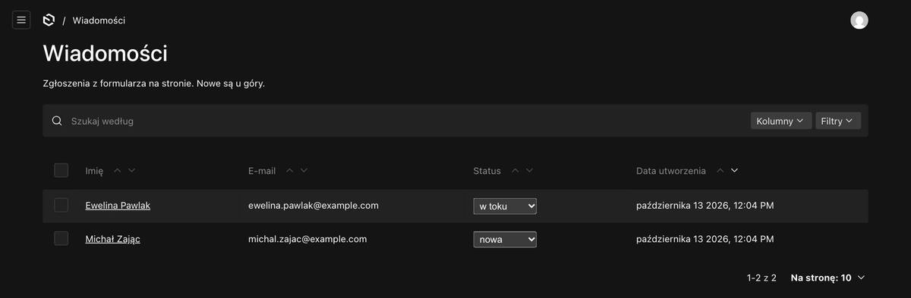
Wiadomości — status zmienisz w kolumnie „Status”.
Wiadomości nie dodaje się w panelu ręcznie — przychodzą tylko z formularza. Po 12 miesiącach znikają same (rozdział 15).
15. Dane osobowe — prośby z RODO i co znika samo
Każdy może poprosić o kopię swoich danych albo o ich usunięcie. Oba załatwisz sam, w zakładce Uczestnicy — nad listą jest rozwijane pole „Dane osoby — kopia albo usunięcie (prośby z RODO)”.
Rozwiń je, wpisz adres e-mail osoby i kliknij Sprawdź, co mamy. Zobaczysz, co jest pod tym adresem: konto, zapisy, wiadomości, newsletter. Nic się jeszcze nie usuwa.
Kopia:Pobierz kopię danych do wysłania osobie. Pobierze się plik, który otwiera się w przeglądarce jako czytelna strona „Twoje dane w ABC Wspinania” — po polsku, z datami. Ten plik wysyłasz osobie w odpowiedzi na jej prośbę (albo drukujesz do PDF). Link „Wersja JSON” obok jest tylko na rzadką prośbę o przeniesienie danych do innej firmy.
Usunięcie: przepisz adres jeszcze raz w polu niżej i kliknij Usuń wszystkie dane tej osoby na zawsze. Znika wszystko pod tym adresem — także nadchodzący zapis (bez maila do tej osoby; miejsce się zwalnia). Tego nie da się cofnąć.
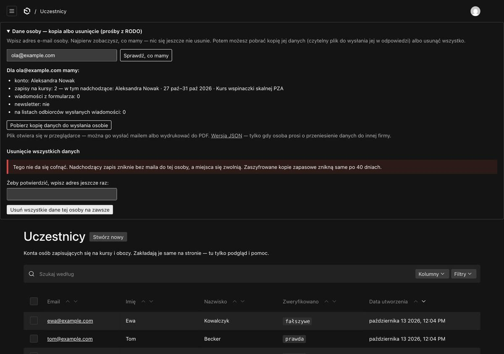
Dane osoby — najpierw sprawdzenie, potem kopia albo usunięcie.
Zapis telefoniczny bez adresu nie znajdzie się po adresie e-mail. Taki zapis usuwasz z listy Zapisy: otwórz go → menu z trzema kropkami → Usuń.
Co znika samo — nic nie musisz pilnować
Co
Kiedy
Niepotwierdzone konto
po 7 dniach od wysłania linku
Niepotwierdzony zapis na newsletter
po 7 dniach
Wiadomości z formularza kontaktowego
po 12 miesiącach
Dane osobowe w zapisach na kursy
5 lat po końcu roku, w którym był kurs (1 stycznia). Zapis zostaje w statystykach — termin i status — ale bez imienia, nazwiska, adresu i telefonu. Zapisy osób, które mają konto, zostają, dopóki konto istnieje.
Kopie zapasowe strony
po 40 dniach
Wypisani z newslettera zostają celowo — to dowód wycofania zgody (rozdział 11). Wszystko to opisuje polityka prywatności na stronie (link na dole każdej strony).
16. Ważne rzeczy o mailach
Maile wychodzą automatycznie z adresu szkoły przeznaczonego tylko do wysyłki. Na ten adres nikt nie odpisuje — każdy mail jest tak ustawiony, że odpowiedź trafia do Ciebie.
Na górze każdego maila jest logo szkoły (to samo, co na Twoich materiałach) i nazwa ABC Wspinania.
Język: maile idą po polsku. Po angielsku dostaje je tylko kursant, który przestawi język w Moim koncie (albo któremu przestawisz go w panelu, w jego koncie). Maile do Ciebie są zawsze po polsku.
Limit: 300 maili dziennie — razem wszystkie maile strony (zapisy, potwierdzenia, wysyłki). Przy obecnej liczbie kursantów to bardzo dużo. Gdyby kiedyś się skończył: wysyłka z zakładki „Wysyłki” wstrzyma się sama i dokończy po odnowieniu limitu — bez Twojego udziału; pojedyncze maile do kursantów (np. potwierdzenia) trafią do kafelka „Maile, które nie doszły”.
Maile mogą czasem trafić do spamu, zwłaszcza na początku. Jeśli kursant mówi, że nic nie dostał — poproś, żeby zajrzał do folderu Spam.
17. Czego jeszcze nie ma
Zapisy na obozy — dojdą, gdy odpowiesz na pytania o zaliczki, rezygnacje i kartę uczestnika. Na razie obozy działają przez formularz kontaktowy.
Płatności przez stronę — strona nie przyjmuje płatności. Dane do przelewu podajesz kursantowi sam, a wpłatę zaznaczasz statusem.
Cała strona po angielsku — po angielsku jest strona główna /en i polityka prywatności. Reszta strony jest po polsku; tłumaczenie całości to osobny temat do ustalenia.
Prośba na koniec
Zanim strona ruszy pod docelowym adresem, chciałbym, żebyś przeszedł wszystko sam, na prawdziwej stronie. Przygotowałem do tego osobny scenariusz testów (PDF) — krok po kroku, z tym, co ma się stać. Konta i terminy testowe wgrywam ja; poznasz je po dopisku „TERMIN TESTOWY — nie zapisuj się”, a po Twoich testach wszystko posprzątam jednym przyciskiem.
Wszystko, co chciałbyś mieć inaczej — nazwy, teksty maili, kolejność, czegoś brakuje — zapisz i daj mi znać.